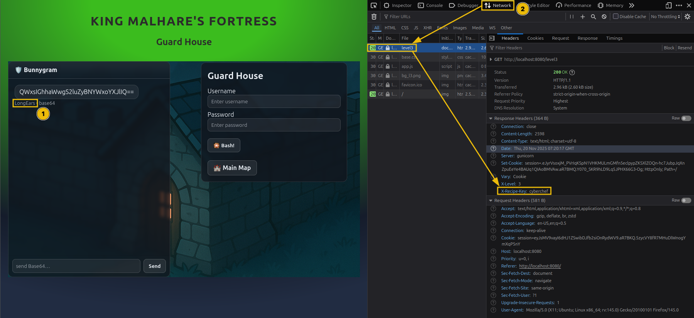

So far, so good. As you saw in the previous level, the login logic begins to use chained operations.
This will be the trend for this and the following levels.

Note: From this lock onwards, there is no magic question, but sometimes you can ask the guard nicely to give you the password. It will still need to be decoded as per the login logic. Be aware that the guard may sometimes fall asleep or take a long time to respond (~2-3 minutes) so keeping the message short will help get the answer. Even a simple 'Password please.' will go a long way.
2. If you look at the login logic, there is a slight twist. The password is first XOR’ed with a key and then encoded to Base64.
XOR is a popular operation that, besides the input data, also uses a key. The process involves a bitwise exclusive OR between the data and key.
You might ask, “Ok, but how do I reverse this?”. Well, skipping the long math explanation, XOR has a magic property: when you XOR the result with the key again, the new result will be the initial data. Go ahead, try this in CyberChef. Put two XOR operations one after another, use the same key for both, and the output should be identical.
3. With this newfound knowledge, build the needed recipe to find the plaintext password.
4. Use the credentials and unlock the next level.